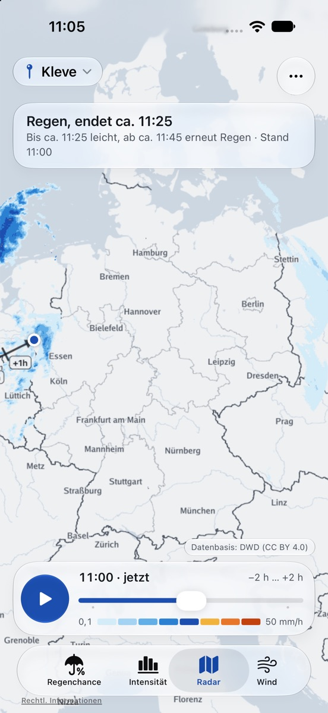
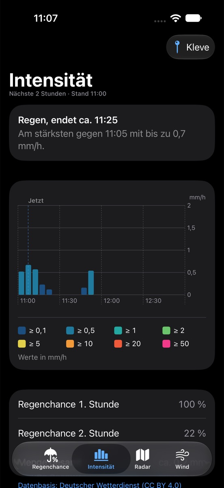

Regen ab 23:05.
Blitzregen ist ein Regenradar für Deutschland. Es zeigt dir in Sekunden, ob und wann es bei dir regnet – für die nächsten zwei Stunden.
Im Browser unter radar.blitzregen.de, bald auch für iPhone, iPad, Mac und Apple Watch.


Was Blitzregen kann
Kurzvorhersage
„Regen ab 23:05“ oder „Trocken bis mindestens 00:45“: auf einen Blick, für deinen Standort oder jeden Ort in Deutschland.
Radar −2 h bis +2 h
Die Radarkarte zeigt die letzten zwei Stunden und die Vorhersage für die nächsten zwei, in 5-Minuten-Schritten.
Intensität & Regenchance
Wie stark es regnet und wie wahrscheinlich Regen ist – als Diagramm für die nächsten zwei Stunden.
Schnell
Die Radardaten werden auf dem Server aufbereitet. Die App lädt nur fertige Bilder und kleine Antworten.
Hell & Dunkel
Zwei abgestimmte Farbpaletten, die automatisch dem Erscheinungsbild deines Geräts folgen.
Ohne Werbung, ohne Tracking
Kein Konto, keine Analyse, keine Werbung. Details in der Datenschutzerklärung.
Support
Fragen, Fehler oder Wünsche? Schreib an ralph@blitzregen.de.
Woher kommen die Daten?
Vom Deutschen Wetterdienst (DWD): Radarkomposit RV mit Niederschlagsanalyse und -vorhersage, alle fünf Minuten aktualisiert. Datenbasis: Deutscher Wetterdienst (CC BY 4.0).
Wie genau ist die Vorhersage?
Die Vorhersage schreibt die Bewegung der Regengebiete fort. Für die nächste Stunde ist das meist sehr zuverlässig; Schauer, die sich neu bilden, kann sie nicht vorhersehen. Die Regenchance ist eine Schätzung aus der Umgebung des Ortes.
Warum steht da „Keine Radardaten“?
Fällt ein Radar des DWD aus oder wird gewartet, fehlen für einen Teil Deutschlands vorübergehend Daten. Blitzregen zeigt dann ehrlich, dass es nichts weiß, statt „trocken“ zu melden.
Braucht die App meinen Standort?
Nein. Du kannst jeden Ort über die Suche wählen. Den Standort fragt die App nur, wenn du „Mein Standort“ antippst, und nur während der Nutzung.
Werden meine Favoriten synchronisiert?
Ja, über deinen iCloud-Account zwischen deinen Geräten. Wir haben darauf keinen Zugriff.